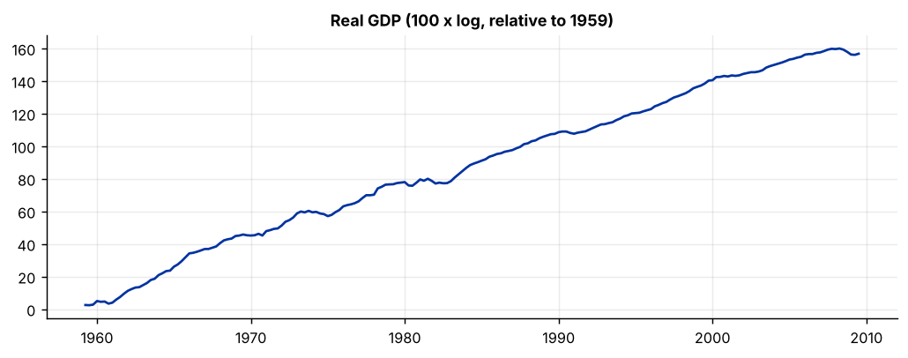
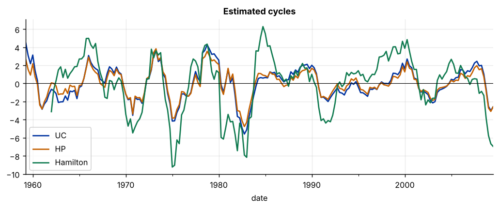

Step 1The question and the model
How much of the movement in GDP is a lasting change in the trend, and how much is a temporary cycle? The unobserved-components model writes the series as
where \(\mu_t\) is the trend, \(\psi_t\) is a cycle and \(\varepsilon_t\) is noise. The trend is smooth: \(\mu_t = \mu_{t-1} + \beta_{t-1}\) and \(\beta_t = \beta_{t-1} + \zeta_t\), so the growth rate changes slowly. The cycle is a damped stochastic cycle with a period \(2\pi/\lambda\) and a damping factor \(\rho<1\):
The model is estimated by maximum likelihood with the Kalman filter, and the trend and cycle come from the Kalman smoother. The two filters it is compared with do not use a model:
| Method | Idea | Weak point |
|---|---|---|
| Hodrick-Prescott | a smooth curve that trades fit against smoothness (\(\lambda = 1600\) for quarterly data) | creates spurious cycles in a random walk; the end of the sample is unreliable |
| Hamilton regression | the cycle is the forecast error of the series two years ahead from its four latest values | a different concept of the cycle; no value for the first years |
| Unobserved components | a model with a trend and a cycle | the answer depends on the model and on the bounds on the cycle period |
| Variable | Definition |
|---|---|
gdp_level |
real GDP, 100 times the log, built by cumulating the annualised quarterly growth rates divided by four (the level is relative to 1959Q1, which is all the decomposition needs) |
Before you estimate anything
- Plot the series in logs. Decomposition applies to a level, not to a growth rate.
- Decide what you mean by the cycle. The deviation from a smooth trend (HP, UC) and the unpredictable part of the series (Hamilton) are different things.
- Set the plausible cycle length. Business cycles in the U.S. last roughly 1.5 to 10 years; the bounds you set limit what the model can find.
How to write it: methods sentence
We decompose log real GDP into a trend and a cycle with an unobserved-components model with a smooth trend and a damped stochastic cycle with a period between 6 and 40 quarters, estimated by maximum likelihood with the Kalman filter. For robustness we compare the cycle with those from the Hodrick-Prescott filter (smoothing parameter 1600) and the Hamilton (2018) regression filter.
Step 2Load the data and plot the series
import warnings; warnings.filterwarnings("ignore")
import numpy as np, pandas as pd
import matplotlib.pyplot as plt
import statsmodels.api as sm
from statsmodels.tsa.filters.hp_filter import hpfilter
d = pd.read_csv("us_gdp_level.csv")
d["date"] = pd.PeriodIndex(d["date"], freq="Q").to_timestamp(); d = d.set_index("date")
x = d["gdp_level"]
print(f"{len(x)} quarters, {x.index[0].year}Q{x.index[0].quarter} to {x.index[-1].year}Q{x.index[-1].quarter}")
print(f"average annual growth: {4 * x.diff().mean():.2f}% a year; standard deviation of the quarterly change: {x.diff().std():.2f}")
fig, ax = plt.subplots(figsize=(8, 3.2)); ax.plot(x); ax.set_title("Real GDP (100 x log, relative to 1959)"); plt.tight_layout(); plt.show()202 quarters, 1959Q2 to 2009Q3 average annual growth: 3.07% a year; standard deviation of the quarterly change: 0.87

How to read it
GDP grows at about 3% a year on average, with recessions as dips below the line of the trend (1974, 1980–82, 2008–09). The level of the series is a smooth line with small deviations, which is why the trend and the cycle are hard to separate: the answer depends on the model you use.
Step 3Step 1: Unobserved-components model with a stochastic cycle
mod = sm.tsa.UnobservedComponents(x.values, level="smooth trend", cycle=True, stochastic_cycle=True, damped_cycle=True, cycle_period_bounds=(6, 40))
res = mod.fit(method="powell", disp=0, maxiter=3000); res = mod.fit(res.params, disp=0, maxiter=300)
tab = pd.DataFrame({"estimate": res.params, "s.e.": res.bse}, index=mod.param_names)
print(tab.round(4).to_string())
per = 2 * np.pi / res.params[mod.param_names.index("frequency.cycle")]
print(f"\ncycle period: {per:.1f} quarters = {per / 4:.1f} years; damping: {res.params[mod.param_names.index('damping.cycle')]:.3f}; log-likelihood {res.llf:.2f}")
trend = pd.Series(res.smoothed_state[0], index=x.index); cycle_uc = pd.Series(res.cycle.smoothed, index=x.index)
print("standard deviation of the cycle:", round(cycle_uc.std(), 2))estimate s.e. sigma2.irregular 0.0000 0.0435 sigma2.trend 0.0043 0.0027 sigma2.cycle 0.4853 0.1007 frequency.cycle 0.2346 0.0330 damping.cycle 0.9306 0.0228 cycle period: 26.8 quarters = 6.7 years; damping: 0.931; log-likelihood -249.38 standard deviation of the cycle: 1.84
How to read it
The cycle has a period of 26.8 quarters, or 6.7 years, and a damping factor of 0.93, so a shock to the cycle loses about 7% of its size every quarter. The variance of the shocks to the cycle (0.49) is large relative to the variance of the shocks to the slope of the trend (0.004), so the model assigns most of the movement to the cycle and keeps the trend smooth. The standard deviation of the estimated cycle is 1.8 percentage points. The variance of the irregular is zero at the boundary.
Step 4Step 2: Is the cycle needed? Compare specifications
rows = []
for lab, lvl in (("smooth trend", "smooth trend"), ("local linear trend", "lltrend"), ("random walk with drift", "rwdrift")):
for cyc in (True, False):
kw = dict(level=lvl); kw.update(dict(cycle=True, stochastic_cycle=True, damped_cycle=True, cycle_period_bounds=(6, 40)) if cyc else {})
m = sm.tsa.UnobservedComponents(x.values, **kw); r = m.fit(method="powell", disp=0, maxiter=3000); r = m.fit(r.params, disp=0, maxiter=300)
rows.append([lab, "yes" if cyc else "no", round(r.llf, 2), round(r.aic, 1), round(r.bic, 1)])
print(pd.DataFrame(rows, columns=["trend", "cycle", "log-lik", "AIC", "BIC"]).to_string(index=False)) trend cycle log-lik AIC BIC
smooth trend yes -249.38 508.8 525.2
smooth trend no -262.76 529.5 536.1
local linear trend yes -249.38 510.8 530.5
local linear trend no -254.53 515.1 525.0
random walk with drift yes -258.25 524.5 537.7
random walk with drift no -259.39 520.8 524.1How to read it
The smooth trend with a cycle has the lowest AIC (508.8), but BIC, which penalises parameters more, prefers the simple random walk with drift and no cycle (524.1 against 525.2 for the model with the cycle). So the data do not give strong support to the existence of a regular cycle: a series that is close to a random walk with drift produces a cycle estimate that is mostly the assumption of the model. Report this, and avoid presenting the cycle as a measured quantity.
Step 5Step 3: Compare with the HP and Hamilton filters
cycle_hp, trend_hp = hpfilter(x.values, lamb=1600)
cycle_hp = pd.Series(cycle_hp, index=x.index)
# Hamilton (2018): regress x(t+8) on a constant and x(t), x(t-1), x(t-2), x(t-3); the residual is the cycle
h, p = 8, 4
idx = np.arange(p - 1, len(x) - h)
X = sm.add_constant(np.column_stack([x.values[idx - j] for j in range(p)]))
ham = sm.OLS(x.values[idx + h], X).fit()
cycle_h = pd.Series(np.nan, index=x.index); cycle_h.iloc[idx + h] = ham.resid
cyc = pd.DataFrame({"UC": cycle_uc, "HP": cycle_hp, "Hamilton": cycle_h})
print("Standard deviation of each cycle:"); print(cyc.std().round(2).to_string())
print("\nCorrelations (common sample):"); print(cyc.dropna().corr().round(3).to_string())
fig, ax = plt.subplots(figsize=(8, 3.4)); cyc.plot(ax=ax); ax.axhline(0, color="k", lw=.6); ax.set_title("Estimated cycles"); plt.tight_layout(); plt.show()Standard deviation of each cycle:
UC 1.84
HP 1.55
Hamilton 3.17
Correlations (common sample):
UC HP Hamilton
UC 1.000 0.982 0.710
HP 0.982 1.000 0.742
Hamilton 0.710 0.742 1.000
How to read it
The unobserved-components and HP cycles are almost the same (correlation 0.98), with a standard deviation of 1.8 and 1.55; the model-based cycle is slightly larger because its trend is less flexible. The Hamilton cycle is quite different: it has a correlation of 0.71 and 0.74 with the other two and its standard deviation is about 1.7 times as large (3.2), because it measures the error of a two-year-ahead forecast, which contains the growth shocks of the next two years, not the gap to a smooth trend. The three are not interchangeable: if your result changes with the filter, it depends on how you define the cycle.
Step 6Step 4: Trend growth over time
growth = 4 * trend.diff()
print(growth.iloc[[1, 50, 100, 150, 200]].round(2).rename("trend growth, % a year").to_string())
print("\nhighest:", growth.idxmax().strftime("%YQ") + str(growth.idxmax().quarter), round(growth.max(), 2), " lowest:", growth.idxmin().strftime("%YQ") + str(growth.idxmin().quarter), round(growth.min(), 2))date 1959-07-01 5.00 1971-10-01 3.00 1984-04-01 3.44 1996-10-01 3.70 2009-04-01 1.07 highest: 1961Q3 5.05 lowest: 2009Q1 1.06
How to read it
The estimated trend growth is close to 3 to 3.7% a year from the 1970s to the 1990s and falls to about 1% at the end of the sample, after the 2008–09 recession (the 5% at the very start is an edge effect of the smoother). The value at the end of the sample is the least reliable, since the smoother has no data after it; adding a few quarters can change it.
Step 7What to report in the paper
Report the model (trend and cycle), the estimated period and damping of the cycle with standard errors, a comparison with at least one other filter, and the sensitivity of your main result to the choice. Say that the cycle is an estimate, and that end-of-sample values are revised when data are added.
How to write it: results and robustness
The estimated cycle has a period of 6.7 years and a damping factor of 0.93, and a standard deviation of 1.8 percentage points. It is almost the same as the Hodrick-Prescott cycle (correlation 0.98). The Hamilton-filter cycle, which measures forecast errors, is correlated 0.71 with ours and has a larger variance, and we report our main results with all three measures. The information criteria give mixed support for a cycle in the model: AIC prefers it and BIC does not.
Step 8Common mistakes
Mistakes to avoid
- Treating the cycle as data. It is an estimate that depends on the filter.
- Using HP with a wrong smoothing parameter. 1600 is for quarterly data; use 129600 for monthly and 100 for annual data (or 6.25 as Ravn and Uhlig suggest).
- Applying a filter to growth rates. Use the level, in logs.
- Ignoring the end of the sample. The last values change when data arrive; policy gaps in real time are different from those that use the full sample.
- Estimating the HP cycle and then regressing on it as if it were observed. The filter creates dynamics that can produce spurious results.
- Choosing the filter by its results. Decide on the filter before you see the main result and report the others as robustness.
- Setting no bounds on the cycle period. The model can pick a cycle at a frequency that has no economic meaning.
- Reading a zero variance as a finding. A variance on the boundary means the component is deterministic in this specification, and the standard error is not meaningful there.